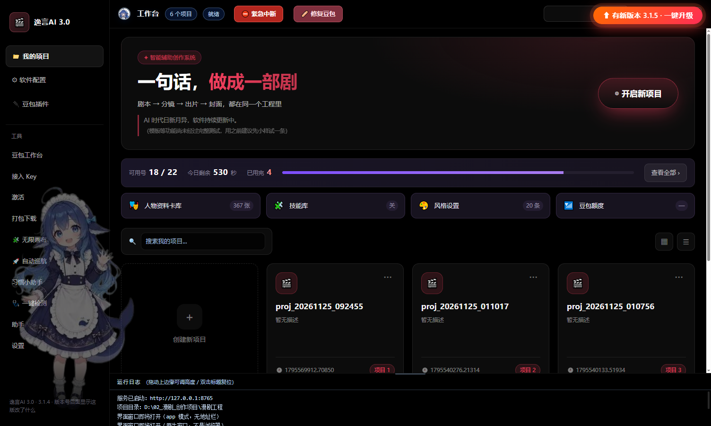
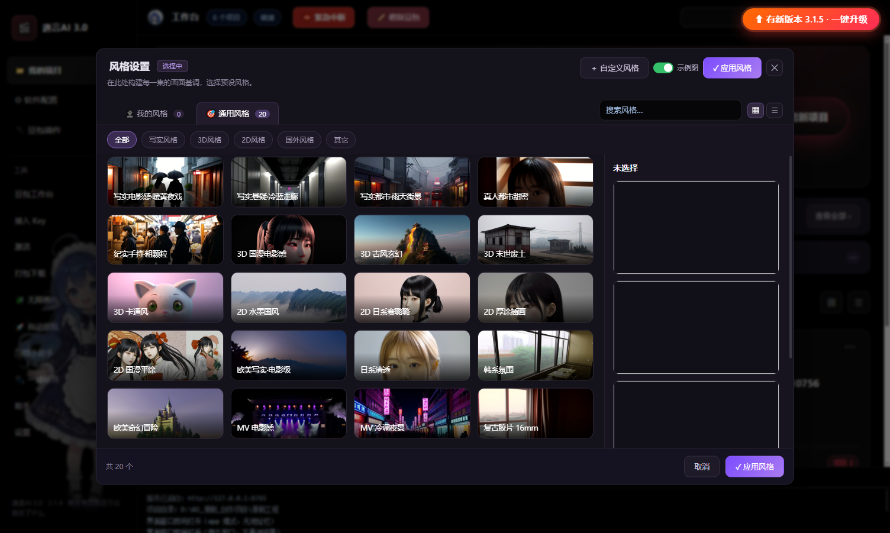

一句话，做成一部剧
当前版本 3.1.5 · 支持 Windows 10 / 11
下载 Windows 版 47.1 MB · Windows 10 / 11 下载 zip 版浏览器提示「不常下载，可能有风险」时，点「保留」即可
剧本、分镜、出片、封面，都在同一个工程里


从一句话到一条能发的片
写个大概或粘一份剧本，自动拆成分镜表，每镜带景别、运镜、台词。
写实电影感、3D 国漫、2D 水墨、日系清透、MV 冷调……点一下整集统一。
接豆包创作画布一镜一画布生成，10 秒带声音，出完自动下载进工程。
角色、场景、道具、封面分门别类，删工程不会丢素材。
软件自己检测新版本，一键升级，还能按版本回退。
多个豆包账号自动排队，出问题的号自动跳过。
三步，两分钟
D:\逸言AI_3.0，不用改